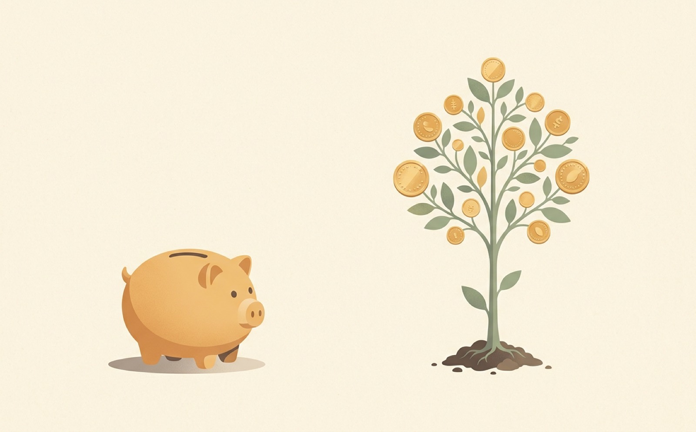
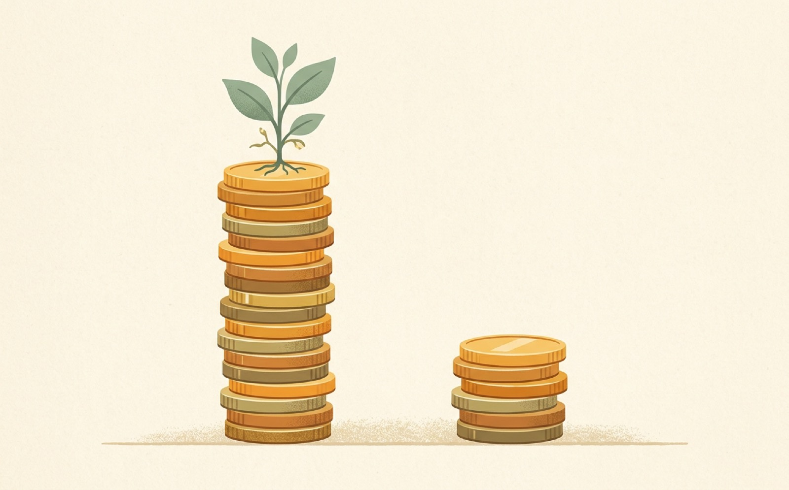

Your biggest edge as an investor isn't cash. It's time. Start young and the math bends almost unfairly in your favor. Let me show you.

Compounding means your money earns money — and then that new money earns money too. It snowballs.
Cash in an account is safe and easy to reach. Good for emergencies. But mostly it just sits there, flat.
You own a slice of a real company. It can grow, and the growth starts growing on itself. That's the snowball.
Both lines begin with the exact same amount. One sits. One gets invested and compounds. Watch the invested line barely move, then pull away hard.
Slide from year 1 to year 30. Notice it crawls at first, then takes off. That takeoff is why a 15-year-old with less money can still beat a 40-year-old with more.

Same monthly amount. The early starter wins — not by investing more, but by giving compounding more years to work.
Tap a move to pick it up, then tap the column where it belongs. Some habits let compounding snowball. Others waste your biggest edge.
Five questions. Nail them to earn your points for the lesson.
Time plus compounding is your single biggest edge.
Compounding is growth on top of growth — it snowballs.
Starting early beats starting big.
Invested money works while flat money just sits.